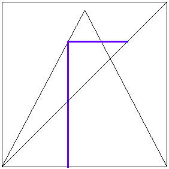

| Sensitivity to initial conditions: nearby initial conditions can lead to
quite distant future states of the system. |
| Compare this with non-chaotic deterministic systems, for which nearby initial conditions lead to
nearby future states, and with random systems, for which nearby initial conditions can lead immediately to
distant future states. |
| Sensitivity ro initial conditions implies a prediction threshold: nearby initial conditions lead
to nearby future states for some time, but eventually the future states diverge. The rate of this divergence,
equivalently, the length of time for which one may be able to predict the future state, is a
measure of the degree of chaotic behavior the ststem exhibits. |
|
|
| For example, using graphical iteration
of the tent map T, we see that starting
from x = 0.400 and
y = 0.399, T10(x) and T10(y) are on
opposite sides of the interval. |
| Put differently, "Even the tiniest change can alter the future in
ways you can't imagine." (Abe Simpson, from the "Time and Punishment" segment of The Little Tree House
of Horrors.) |
|  |
| Click the animation to stop. |
|
| In popular culture, sensitivity to initial conditions often is given the much less dry and dusty name
the butterfly effect, referring to Ed Lorenz's comment, "A b utterfly flaps its wings
in Brazil, there's a tornado in Texas." |
| Despite popular comments, the butterfly effect does not mean that
the flapping of a butterfly's wings in Brazil causes a tornado in Texas. The tiny amount
of energy produced by the flapping of a butterfly's wings cannot, with the passing of time,
gather energy and organize it into the substantial energy content of a tornado. Rather, the
flapping of a butterfly's wing injects some uncertainty into the weather system. That
uncertainty grows with time, eventually overwhelming our ability to to predict, when the
butterfly flaps its wings in Brazil, if several weeks later Texas will experience a tornado.
This distinction is fairly subtle, but very important, a point often missed in popular
descriptions of chaos. |